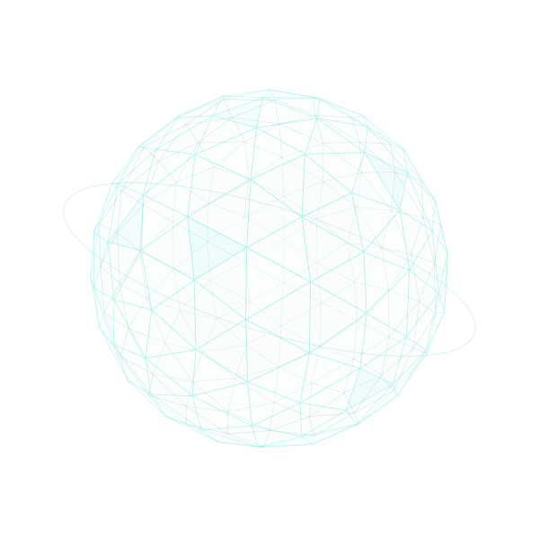

ЗАЩИТА И ДИАГНОСТИКА. ОТКРЫТЫЙ КОД.
Спокойствие.
Под вашим
контролем.
Знайте, что происходит с вашим компьютером. Проверяйте файлы, сохраняйте важное и принимайте решения вместе с AntiOS.
Windows 10 / 11 /Public alpha · В активной разработке

YOUR RULES.
01 /ВОЗМОЖНОСТИ
Видеть больше.
Действовать осознанно.
От отдельного файла до общей картины. Инструменты, которые помогают разобраться в системе и позаботиться о важном.
Внимание к каждому файлу.
Проверяйте выбранные файлы и папки. Изучайте находки, изолируйте подозрительное в карантине и следите за состоянием защиты.
- Проверка по запросу и опциональная фоновая защита
- Находки, пропуски и ошибки показаны отдельно
- Совместная работа с поддерживаемыми антивирусами
Сохранить то, что незаменимо.
Выберите файлы и папки, создайте эталонную копию и проверяйте целостность. При необходимости восстановите сохранённое в безопасное место.
- Вы сами определяете, что нужно сохранить
- Сохранённые данные проверяются перед восстановлением
- Восстановление файлов, а не полный откат Windows
Меньше догадок. Больше ясности.
Изучайте диагностику системы, локальные события и состояние хранилища. Находите кандидатов на очистку и решайте, что делать дальше.
- Диагностика Windows и состояния защиты
- Очистка хранилища и поиск возможных дубликатов
- Удаление требует явного подтверждения
02 /ТОЧКА ВОЗВРАТА
Важные файлы.
Чуть больше спокойствия.
Ваша работа, идеи и проекты. Создайте эталонную копию до того, как она понадобится.
-
01 / SELECT
Выберите важное
Добавьте файлы и папки, которые хотите сохранить. Область защиты задаёте вы.
-
02 / PRESERVE
Создайте эталон
Сохраните эталонную копию и используйте проверку целостности, чтобы увидеть изменения.
-
03 / RECOVER
Верните сохранённое
Проверьте сохранённые данные и восстановите их в безопасное место.
Восстановление файлов не заменяет резервную копию всей системы и не гарантирует отсутствие угроз в сохранённых данных.
03 /ОСНОВА ДОВЕРИЯ
Понятные возможности.
Явные ограничения.
AntiOS развивается открыто: возможности, ограничения и статус функций описываются без обещаний того, чего проект пока не умеет.
Посмотреть исходный код01Ваши данные принадлежат вам
Данные защиты и диагностики по умолчанию обрабатываются локально. Автоматическая телеметрия проекта не включена. Проверяйте диагностические отчёты перед отправкой.
Политика конфиденциальности ↗02Открытый исходный код.
Исходный код AntiOS доступен под лицензией Apache 2.0. Релизы и автоматические проверки публикуются на GitHub.
Посмотреть проверки ↗03Alpha — значит в разработке
AntiOS — предварительная версия и дополнительный слой защиты. Проект не заявляет статус сертифицированного основного антивируса или обнаружение любых угроз. Сохраняйте основную защиту включённой.
Совместимость и ограничения ↗04Для каких систем подходит?
Основная платформа — Windows 10 22H2 x64 и более новые сборки Windows 11. Для Linux предусмотрена дополнительная companion-поддержка. Требования к пакетам указаны в описании релиза.
Описание релизов ↗READY WHEN YOU ARE
Ваша система.
Ваши правила.
Скачайте текущую предварительную сборку или посмотрите исходный код и документацию проекта.
Предварительная версия. Изучите описание релиза и сохраните резервные копии важных данных.